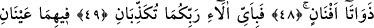
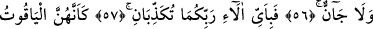

İYİLİĞİN KARŞILIĞI
İYİLİKTEN BAŞKA
BİR ŞEY MİDİR?
46. Rabbinin huzurunda durmaktan korkan kimselere iki cennet vardır.
47. Öyleyken Rabbinizin nimetlerinden hangisini yalanlayabilirsiniz?
48. İki cennet de çeşit çeşit ağaçlarla doludur.
49. Öyleyse Rabbinizin hangi nimetlerini yalanlayabilirsiniz?
50. İkisinde de akıp giden iki kaynak vardır.
51. Öyleyken Rabbinizin hangi nimetlerini yalanlayabilirsiniz?
52. İkisinde de her türlü meyveden çift çift vardır.
53. Öyleyken Rabbinizin hangi nimetlerini yalanlayabilirsiniz?
54. Hepsi de örtüleri atlastan minderlere yaslanırlar. İki cennetin de meyvesinin
devşirilmesi yakındır.
55. Öyleyken Rabinizin hangi nimetlerini yalanlayabilirsiniz?
56. Oralarda gözlerini yalnız eşlerine çevirmiş güzeller var ki, bunlardan önce
onlara ne insan ne de cin dokunmuştur.
57. Öyleyken Rabbinizin hangi nimetlerini yalanlayabilirsiniz?
58. Sanki onlar yakut ve mercandırlar.
59. Öyleyken Rabbinizin hangi nimetlerini yalanlayabilirsiniz?
60. İyiliğin karşılığı iyilikten başka bir şey midir?
Rabbinin huzurunda durmaktan korkan kimselere dinî ve dünyevî nimetlerden